Un Shooting Boudoir est une séance photo de femme en lingerie sexy : des portraits glamour et sensuels,
remplis de douceur et féminité. Permettant de se révéler et souvent de se sentir mieux dans sa peau.
Se voir sous un regard différent que le sien aide parfois à se dire que finalement les petits défauts sur lesquels on se focalise
sont invisibles.
Il s'en passe des événements dans la vie d'une femme … en couple ou célibataire, mariée ou divorcée, future maman ou maman, malade,
en rémission ou guérit …
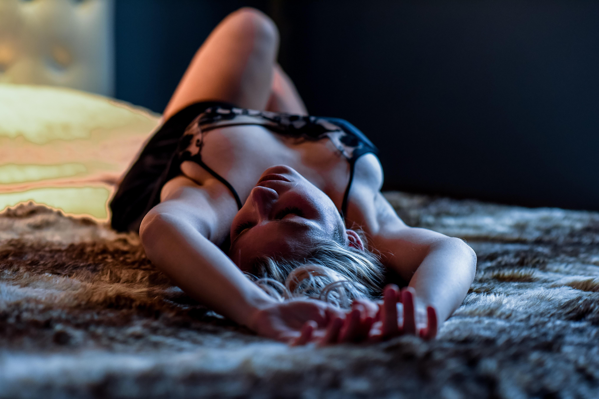
Boudoir
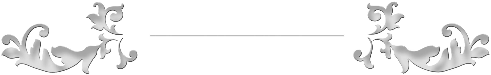
BOUDOIR
Osez vous offrir une seance photo boudoir
Féminité, glamour, douceur, sensualité.
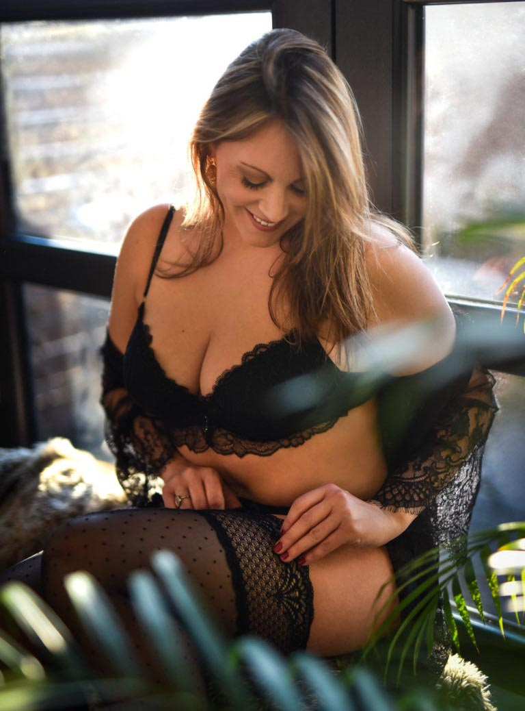
Offrez vous un moment rien que pour vous
Au fil du temps et des événements de la vie, le corps peut changer et nous avons
du mal à l'accepter.
Nous vivons dans une société où le culte du corps est de plus en plus important
et cela provoque des complexes, comme si nous devions à tout prix rentrer
dans une catégorie. Alors que non, notre corps change, évolue et c'est normal.
Parfois il faut du temps pour accepter ce nouveau corps qui est le notre !
Réaliser un Shooting photo Boudoir peut aider et peut faire du bien.
Se voir à travers le regard d'un photographe professionnel qui n'est pas là pour vous juger mais plutôt pour vous sublimer.
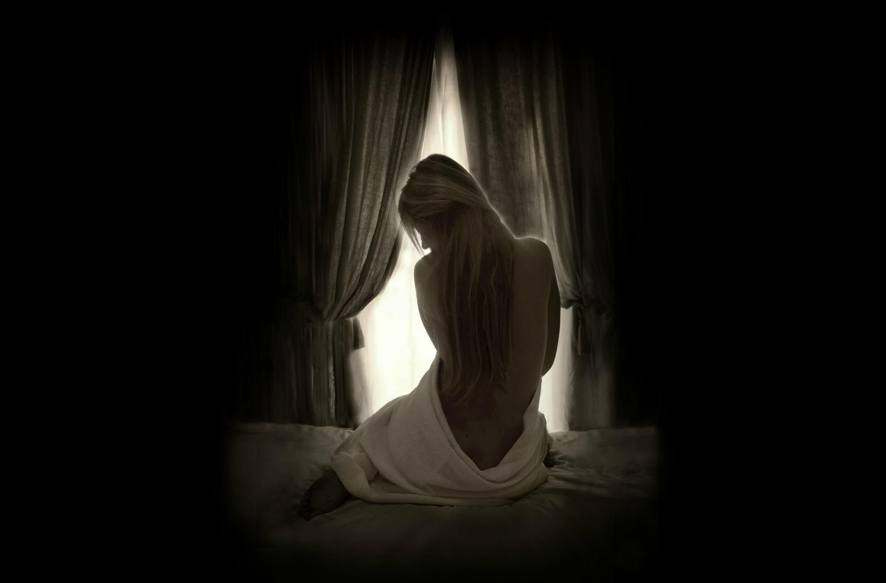
Qu'est ce qu'une séance photo Boudoir ?
Une séance photo Boudoir n’est pas une séance de nue mais
une séance photo intimiste qui peut se déroule au studio
ou à votre domicile, dans des pièces de vie comme la salle
à manger, votre chambre, la cuisine mais aussi si vous en avez un,
votre balcon ou votre jardin.
L'objectif d'un shooting Boudoir est de réaliser des portraits
ou en pieds mêlant douceur, émotion et sensualité (mais non vulgaire,
toutes demandes ambiguës durant le shooting annule le shooting ).
Le but de ce type de photos est que vous puissiez renouer
avec votre féminité, vous révéler, reprendre confiance en vous,
accepter votre corps, voire même vous réconcilier avec lui,
vous sentir bien tout simplement !
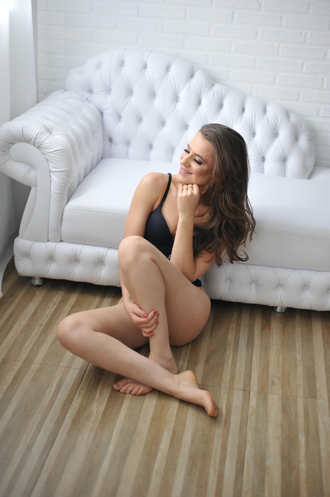
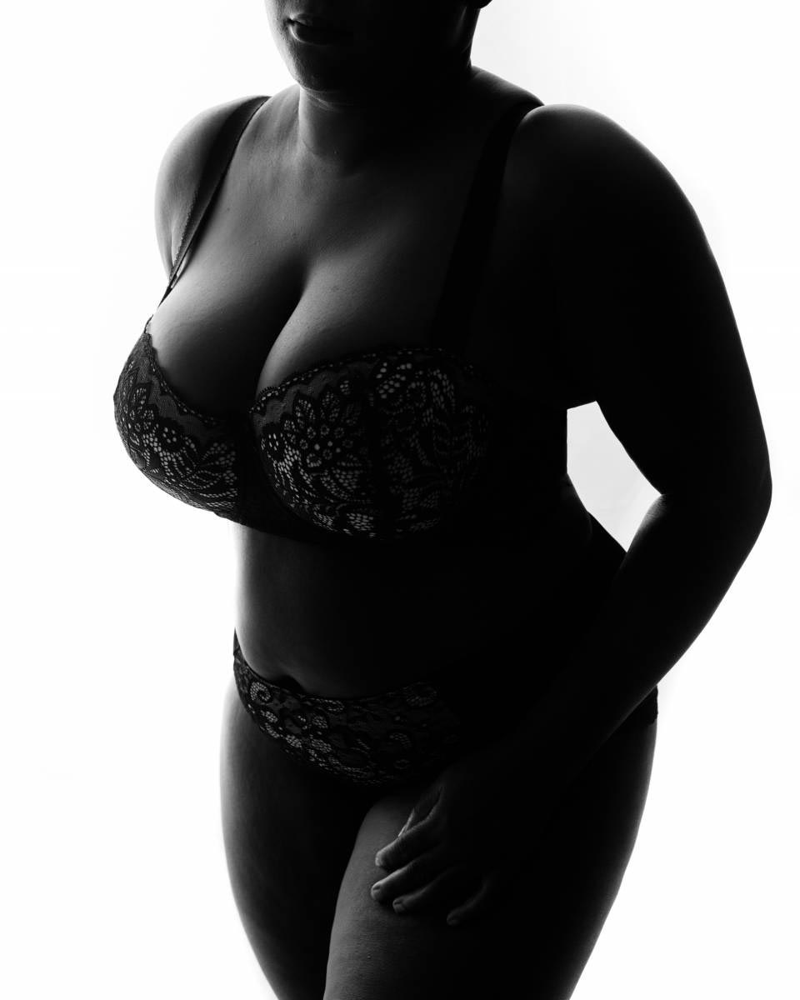
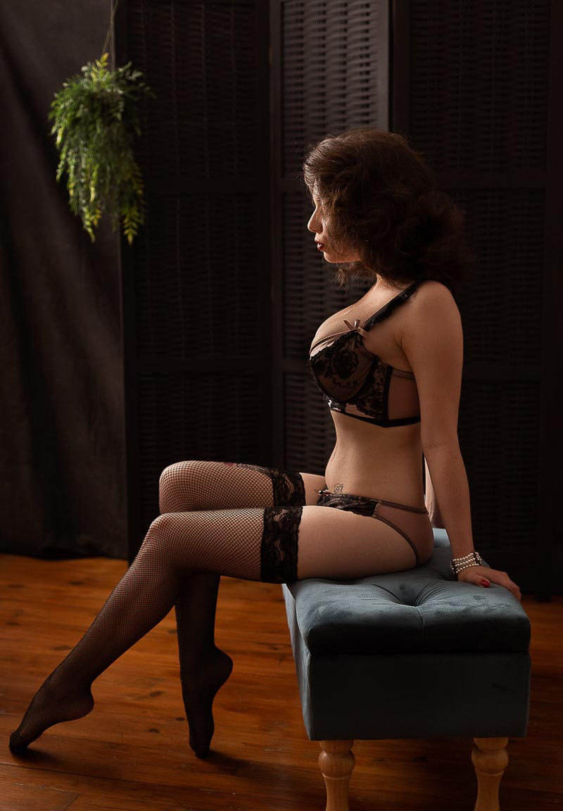
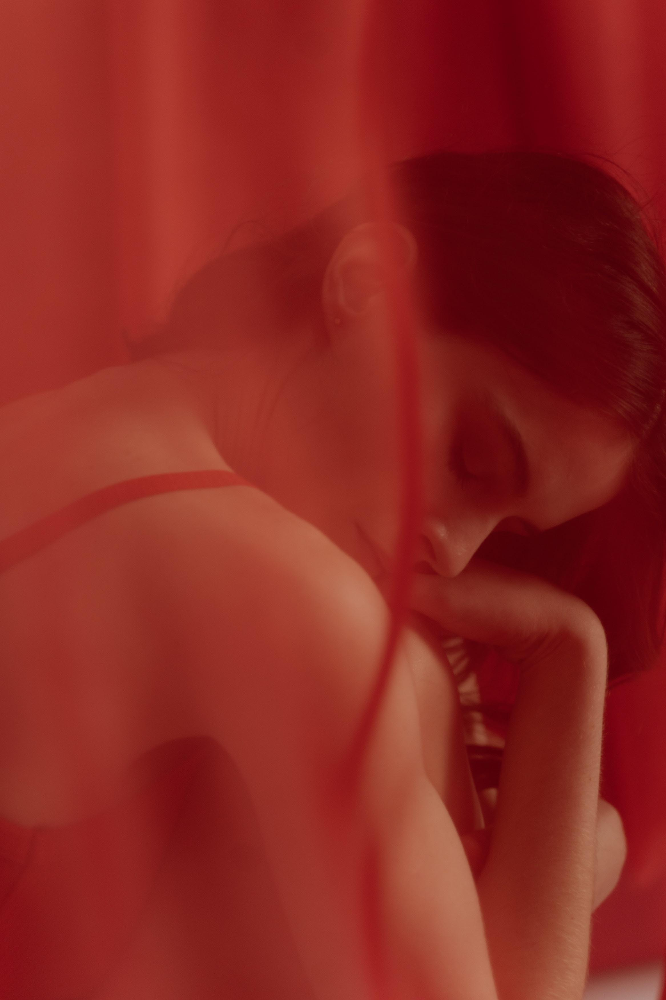
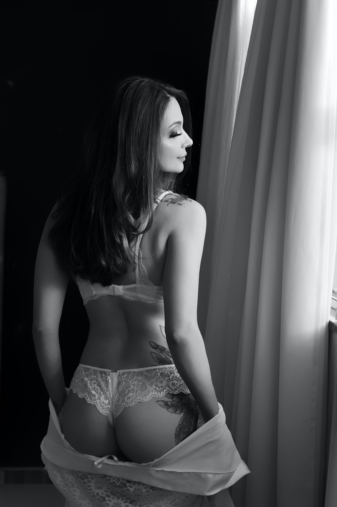
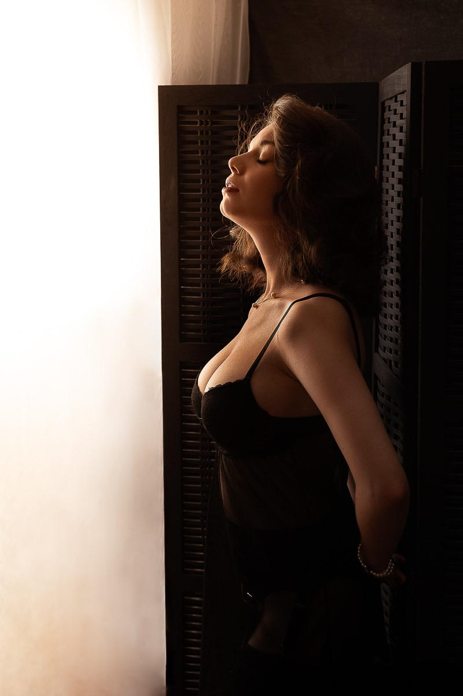
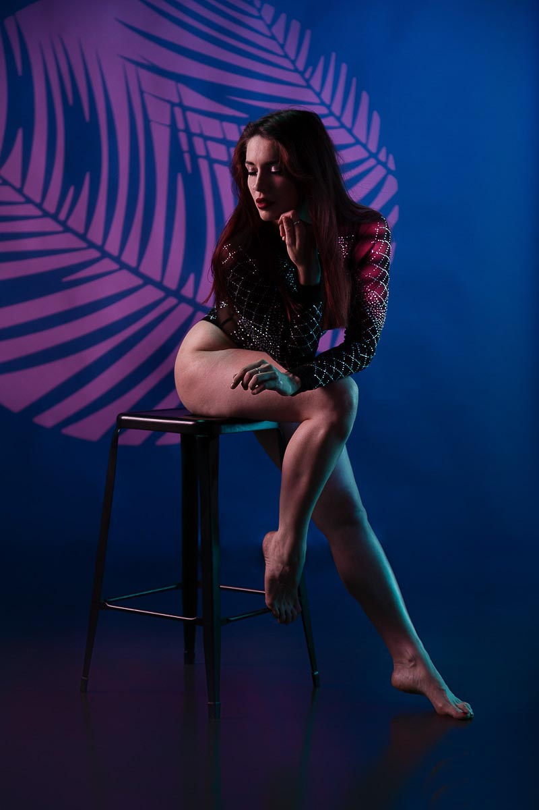
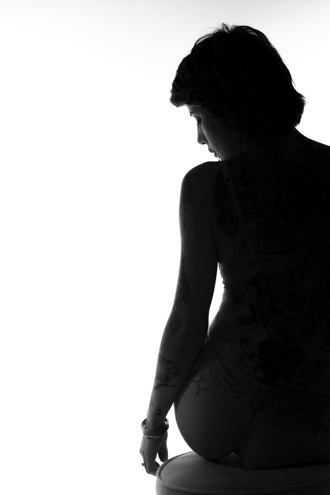
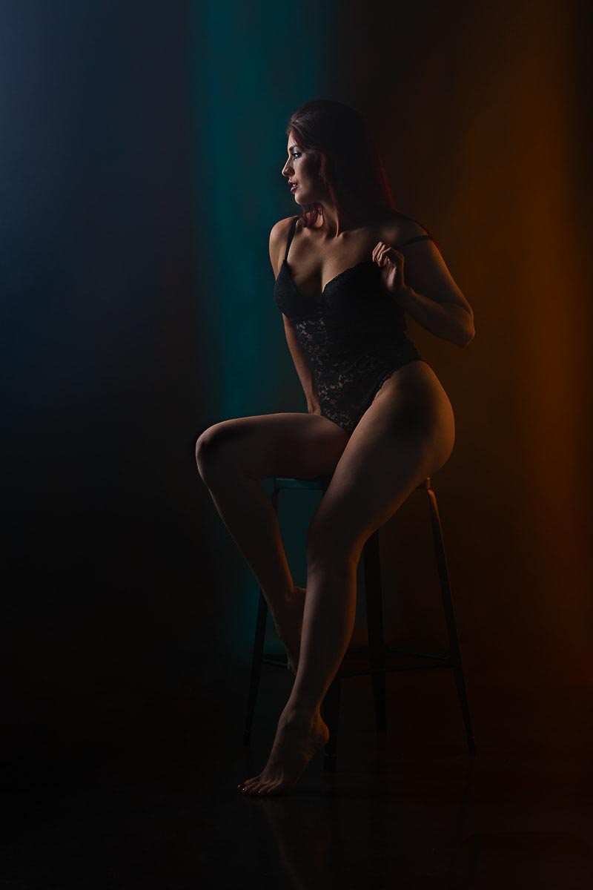